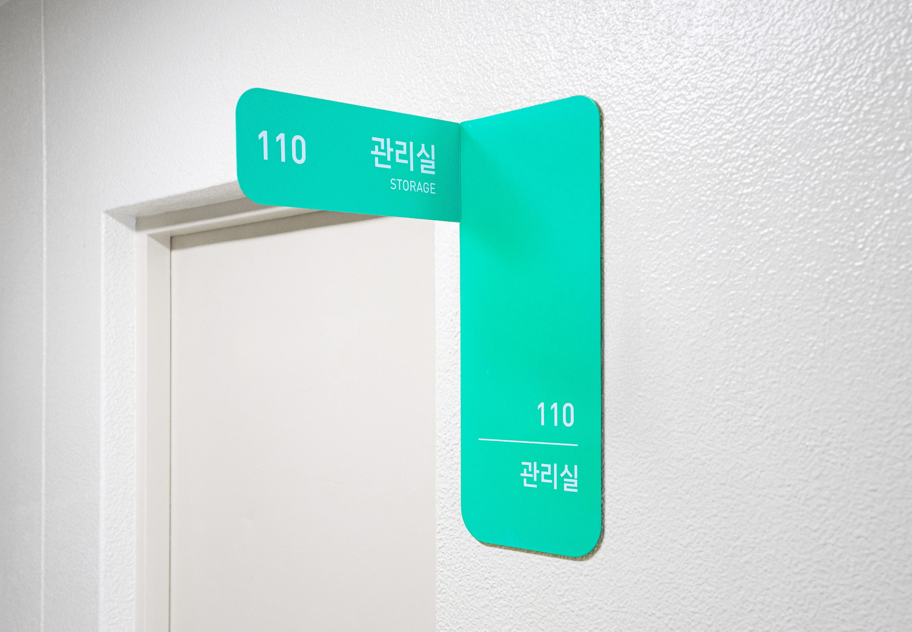
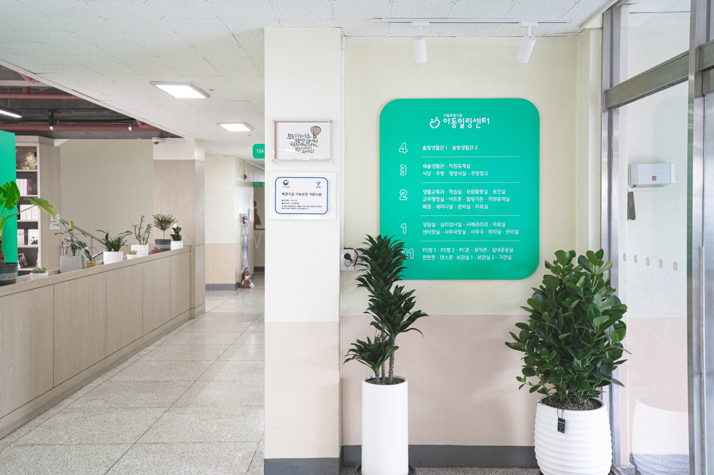
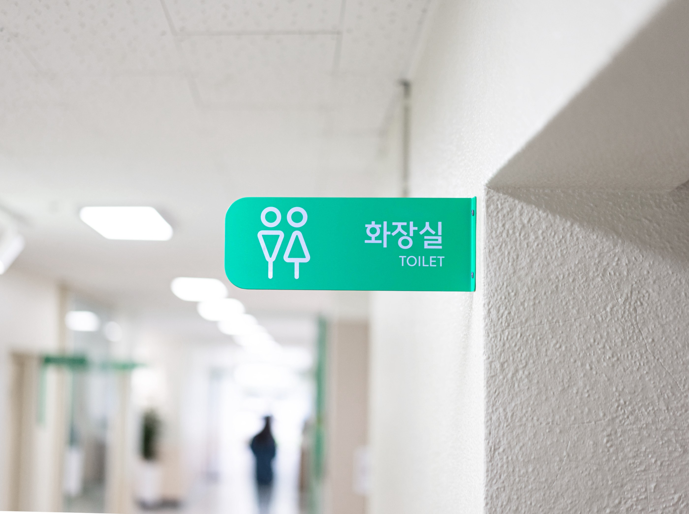
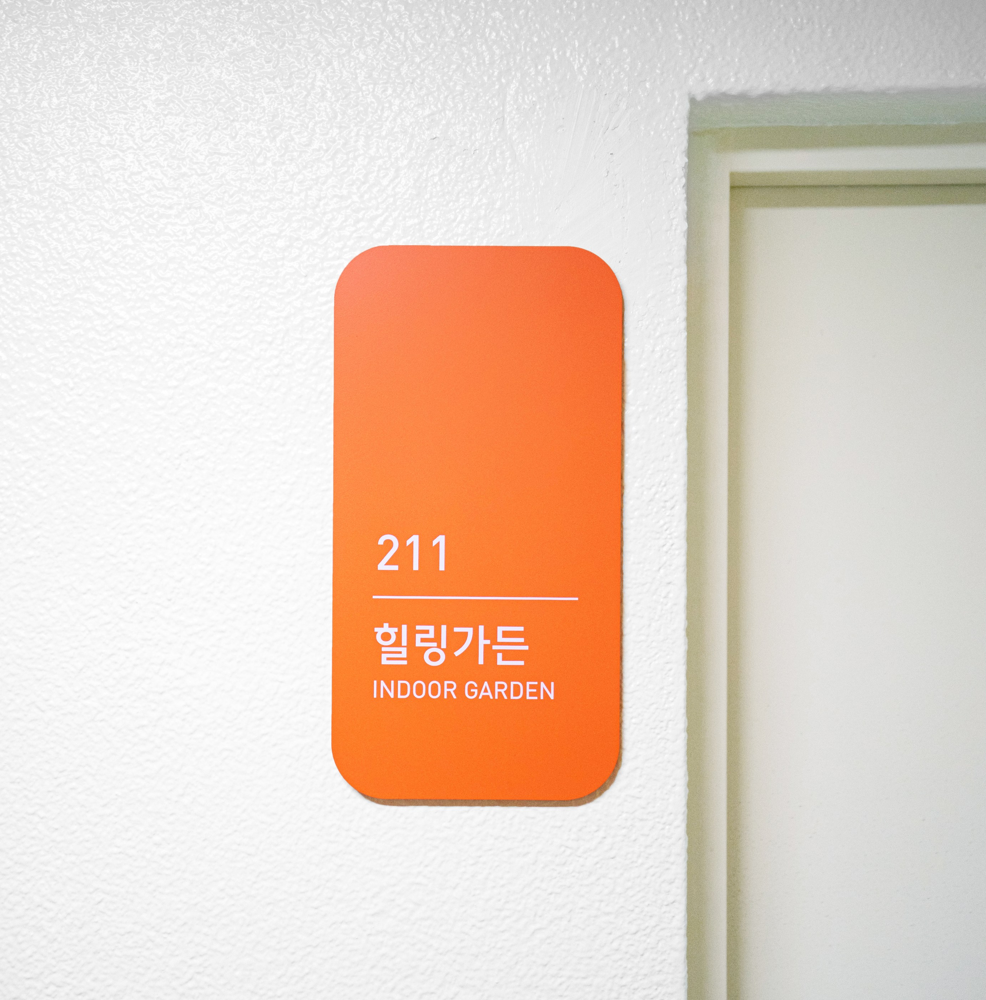

Signage, Branding
Child Healing Center
2025
아동힐링센터는 외상 경험으로 심리적, 신체적 어려움이 있는 아이들이 3개월가량 머무르며 트라우마 기반 치료를 받고 학교로 돌아갈 수 있도록 돕는 시설이다. 서울에서 유일하게 치유와 회복을 위해 조성된 교육시설로서, 2025년 개관을 위한 사이니지를 디자인하였다.
밝고 따뜻한 색채로 각 층의 사이니지 색상을 지정하고, 좁은 복도형 공간의 특성에 따라 벽면 부착형과 돌출형 사이니지를 절곡을 통해 하나로 통합하였다.
The Child Healing Center helps children with psychological and physical difficulties after traumatic experiences. They stay for about three months, receive trauma-based treatment and return to school. As the only educational facility in Seoul built for healing and recovery, it needed signage for its 2025 opening.
Bright, warm colours identify each floor, and because the corridors are narrow, wall-mounted and projecting signs are combined into a single folded sign.
- Category
- Signage, Branding
- Duration
- 6개월 / 6 months
- Company
- SOAP
- Client
- 서울특별시 / Seoul Metropolitan City
- ROLE
- Project manager



